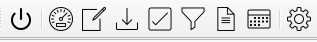
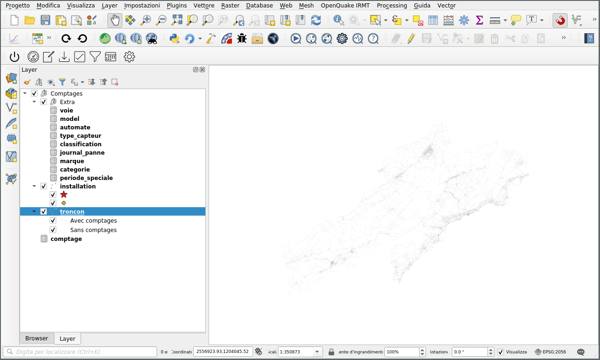

Documentation
Table des matières
Plugin QGIS
Barre d'outils
Le plugin, une fois installé, ajoute une barre d'outils à l'interface QGIS, composée de plusieurs boutons qui permettent d'effectuer différentes opérations.

Figure 1 : Barre d'outils du plugin
Les outils sont, dans l'ordre :
- Connection DB
- Créer un nouveau comptage
- Modifier un comptage
- Importation données
- Validation données
- Filtrage
- Importation fichiers ICS
- Réglages
L'utilisation des outils est décrite dans le chapitre Utilisation.
Utilisation
Connection DB

Figure 2 : Bouton connection DB
Le bouton "Connection DB" ouvre une connexion à la base de données et charge les couches de l'application dans QGIS.

Figure 3 : Couches dans QGIS
Créer un nouveau comptage

Figure 4 : Bouton creation nouveau comptage
Pour créer un nouveau comptage (élément dans la table de comptage), il existe l'outil "Créer un nouveau comptage" qui simplifie l'opération par rapport à l'insertion manuelle dans la table.
Pour créer un nouveau comptage à l'aide de l'outil, vous devez commencer par sélectionner un tronçon sur la carte en utilisant les outils de sélection de géométrie QGIS normaux. Pour simplifier la recherche du tronçon à sélectionner, vous pouvez utiliser l'outil de recherche dans la couche des tronçon.
Une fois que vous avez sélectionné le coffre pour lequel vous voulez créer le comptage, en appuyant sur le bouton "Créer un nouveau comptage" vous pouvez entrer les données du comptage et les sauvegarder dans la base de données.

Figure 5 : Creation d'un nouveau comptage
Modifier comptage

Figure 6 : Bouton modifier comptage
Importation

Figure 7 : Bouton importation données
Validation
Figure 8 : Bouton validation
Filtrage
Figure 9 : Bouton filtrage
Importation fichiers ICS
Figure 10 : Bouton importation fichiers ICS
Réglages

Figure 11 : Bouton réglages